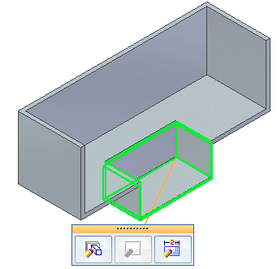
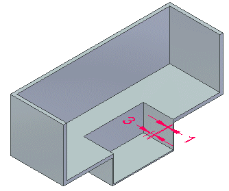
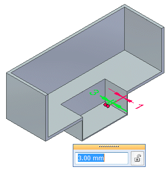
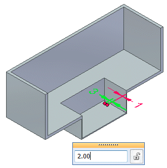

Dynamically edit the clearance or thickness value in the ordered environment
-
Select an emboss feature in either PathFinder or the graphics window to display the Edit Feature command bar.

-
Click the Dynamic Edit button to display the auto dimensions for the clearance and thickness.

-
Click the dimension for the clearance or thickness to display the dynamic edit box.

-
Type a new dimension and press Enter.

-
Click anywhere in the graphics window to complete the edit.
How do I
Emboss a bodyEdit the thickness value of an emboss feature in the synchronous environment
Dynamically edit an emboss feature in the synchronous environment
Edit an emboss feature in the ordered environment
Learn more
Emboss featuresLook up more details
Emboss commandEmboss command bar
Emboss Options dialog box